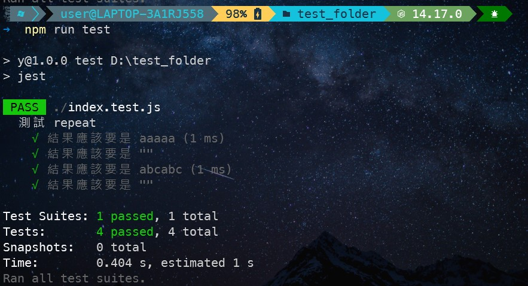
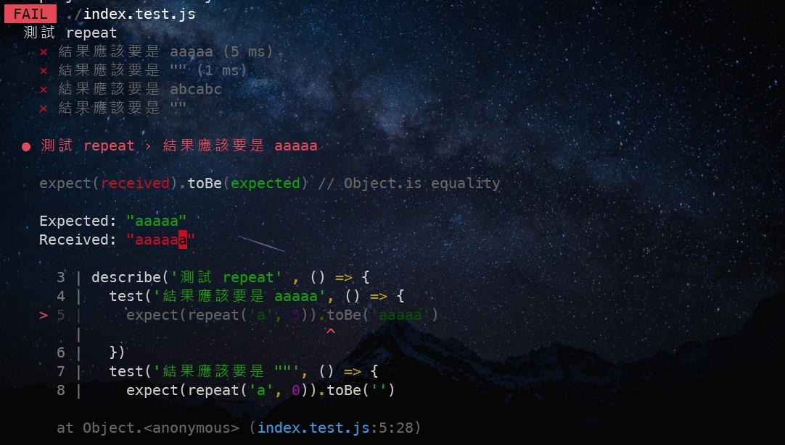
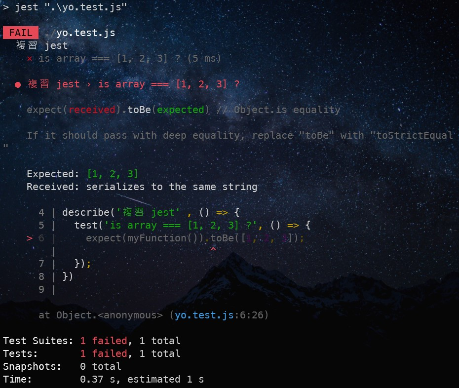
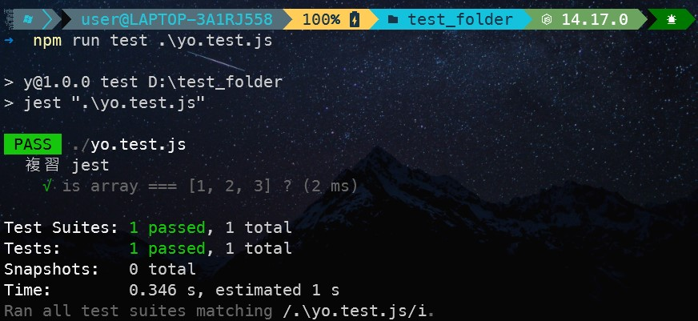

好像很厲害的感覺。
單元測試在做什麼？
單元測試也可以稱為「模組測試」。
一個程式可以劃分成很多個小單位，function 就是其中之一。
而 unit test 要做的事情是，測試每一個 function 的正確性，並確保每一個小的單位（unit）都沒有錯。
另外，這篇筆記的內容是以 jest 來做測試。
基本用法
Step1 把你要測試的 function 給輸出
1 | // index.js |
簡單來說，這個 function 的回傳值是「n 個新字串」
Step2 建立 index.test.js 測試執行檔
一般測試執行檔都會把 .test.js 當做後綴檔名。可以算是個約定俗成，盡量維持這個習俗。
另外如果你剛好也有檔案叫 test.js 的話，會被誤以為是測試執行檔而一起被執行，要多注意。
Step3 撰寫測試內容
有不懂的就參考 README 上的說明，這裡就簡單示範一下：
1 | // index.test.js |
describe(message, function) 是用來把一個要測試的群組給包起來，這樣在結構上會比較好。message 可以填入跟這個群組有關的名稱，function 裡面會放要測試的所有項目。
test(message, function) 是用來執行測試函式，message 可以填入這個函式要測試什麼？
expect(received).toBe(expected) received 放你要執行的函式，expected 填預期的輸出結果。
Step4 執行測試執行檔
特別注意，因為 jest 是安裝在專案底下，所以沒辦法直接在 terminal 上用這個指令，必須透過 npm script 或 npx jest 來執行，詳細可以參考 npm script 與 npx 的用途。
成功執行後就能看到結果如下：

如果有發現錯誤的結果：

補充
當想要檢查的值是陣列 or 物件的話，要改用 toEual 不是 toBe。這樣就會檢查裡面的每一個值是否相同，而不是檢查記憶體位置。
1 | // myFunction 會回傳 [1, 2, 3] |

改成 toEqual 就正確了：
1 | // myFunction 會回傳 [1, 2, 3] |

總結
第一次寫單元測試還蠻有趣的，以前也是很常聽到 unit test 這個技術用語，但都不知道實際上在做什麼，今天算是解決這個疑惑了，也學到一項新的技能，開心！